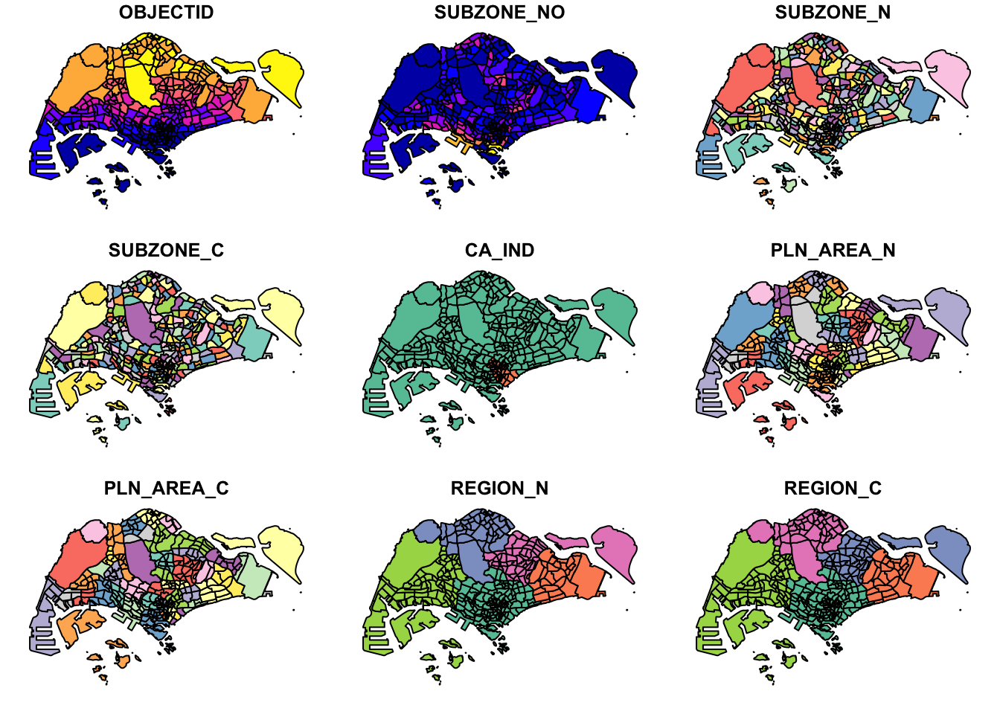
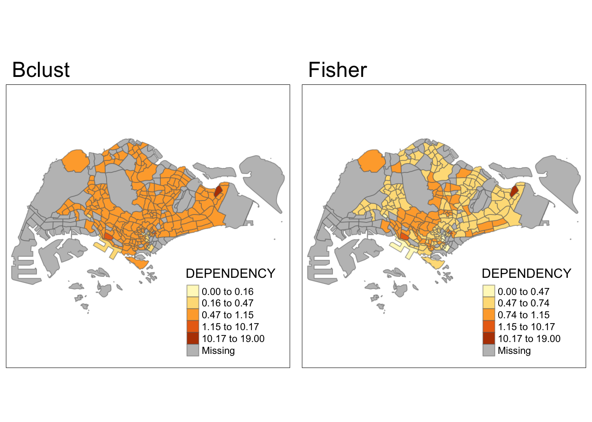

pacman::p_load(sf, tidyverse)Geospatial Wrangling and Choropleth Mapping with R
Geospatial Wrangling
Overview
In this hands-on exercise, I learn how to import and wrangle geospatial data using appropriate R packages.
Getting Started
The code chunk below installs and loads sf and tidyverse.
Notes: Make sure you imported the pacman package before running the code below.
Import Geospatial Data
Before importing anything, download the data zip file(s), unzip, and put them into the folder inside the directory of your page. Then create a Quarto document within that folder. The Quarto document and the data files need to be in the same folder, or you need to clarify the path to the data file while running the code below.
Import polygon feature data
Notes: You need to save your working R document as an qmd file before you can run the code below.
mpsz <- st_read(dsn = "data/geospatial", layer = "MP14_SUBZONE_WEB_PL")Reading layer `MP14_SUBZONE_WEB_PL' from data source
`/Users/sylvia/sylvie-le/ISSS624/Hands-on_Ex/data/geospatial'
using driver `ESRI Shapefile'
Simple feature collection with 323 features and 15 fields
Geometry type: MULTIPOLYGON
Dimension: XY
Bounding box: xmin: 2667.538 ymin: 15748.72 xmax: 56396.44 ymax: 50256.33
Projected CRS: SVY21Import polyline feature data
Run the code chunk below.
cyclingpath <- st_read(dsn = "data/geospatial", layer = "CyclingPath")Reading layer `CyclingPath' from data source
`/Users/sylvia/sylvie-le/ISSS624/Hands-on_Ex/data/geospatial'
using driver `ESRI Shapefile'
Simple feature collection with 1625 features and 2 fields
Geometry type: LINESTRING
Dimension: XY
Bounding box: xmin: 12711.19 ymin: 28711.33 xmax: 42626.09 ymax: 48948.15
Projected CRS: SVY21Import GIS data in kml format
Run the code chunk below.
preschool <- st_read("data/geospatial/pre-schools-location-kml.kml")Reading layer `PRESCHOOLS_LOCATION' from data source
`/Users/sylvia/sylvie-le/ISSS624/Hands-on_Ex/data/geospatial/pre-schools-location-kml.kml'
using driver `KML'
Simple feature collection with 1359 features and 2 fields
Geometry type: POINT
Dimension: XYZ
Bounding box: xmin: 103.6824 ymin: 1.248403 xmax: 103.9897 ymax: 1.462134
z_range: zmin: 0 zmax: 0
Geodetic CRS: WGS 84Checking Data Frame Content
Working with st_geometry()
The type of geometry is multipolygon.
st_geometry(mpsz)Geometry set for 323 features
Geometry type: MULTIPOLYGON
Dimension: XY
Bounding box: xmin: 2667.538 ymin: 15748.72 xmax: 56396.44 ymax: 50256.33
Projected CRS: SVY21
First 5 geometries:MULTIPOLYGON (((31495.56 30140.01, 31980.96 296...MULTIPOLYGON (((29092.28 30021.89, 29119.64 300...MULTIPOLYGON (((29932.33 29879.12, 29947.32 298...MULTIPOLYGON (((27131.28 30059.73, 27088.33 297...MULTIPOLYGON (((26451.03 30396.46, 26440.47 303...Working with glimpse()
Glimpse display a sneak peek into the data type and values of the variables. Notice that X_ADDR and Y_ADDR are double type. There are other types like character, integer, and date.
glimpse(mpsz)Rows: 323
Columns: 16
$ OBJECTID <int> 1, 2, 3, 4, 5, 6, 7, 8, 9, 10, 11, 12, 13, 14, 15, 16, 17, …
$ SUBZONE_NO <int> 1, 1, 3, 8, 3, 7, 9, 2, 13, 7, 12, 6, 1, 5, 1, 1, 3, 2, 2, …
$ SUBZONE_N <chr> "MARINA SOUTH", "PEARL'S HILL", "BOAT QUAY", "HENDERSON HIL…
$ SUBZONE_C <chr> "MSSZ01", "OTSZ01", "SRSZ03", "BMSZ08", "BMSZ03", "BMSZ07",…
$ CA_IND <chr> "Y", "Y", "Y", "N", "N", "N", "N", "Y", "N", "N", "N", "N",…
$ PLN_AREA_N <chr> "MARINA SOUTH", "OUTRAM", "SINGAPORE RIVER", "BUKIT MERAH",…
$ PLN_AREA_C <chr> "MS", "OT", "SR", "BM", "BM", "BM", "BM", "SR", "QT", "QT",…
$ REGION_N <chr> "CENTRAL REGION", "CENTRAL REGION", "CENTRAL REGION", "CENT…
$ REGION_C <chr> "CR", "CR", "CR", "CR", "CR", "CR", "CR", "CR", "CR", "CR",…
$ INC_CRC <chr> "5ED7EB253F99252E", "8C7149B9EB32EEFC", "C35FEFF02B13E0E5",…
$ FMEL_UPD_D <date> 2014-12-05, 2014-12-05, 2014-12-05, 2014-12-05, 2014-12-05…
$ X_ADDR <dbl> 31595.84, 28679.06, 29654.96, 26782.83, 26201.96, 25358.82,…
$ Y_ADDR <dbl> 29220.19, 29782.05, 29974.66, 29933.77, 30005.70, 29991.38,…
$ SHAPE_Leng <dbl> 5267.381, 3506.107, 1740.926, 3313.625, 2825.594, 4428.913,…
$ SHAPE_Area <dbl> 1630379.27, 559816.25, 160807.50, 595428.89, 387429.44, 103…
$ geometry <MULTIPOLYGON [m]> MULTIPOLYGON (((31495.56 30..., MULTIPOLYGON (…Working with head()
Use n = … to select the number of records to display. Head gives a look at the first few rows of the data frame.
head(mpsz, n = 5)Simple feature collection with 5 features and 15 fields
Geometry type: MULTIPOLYGON
Dimension: XY
Bounding box: xmin: 25867.68 ymin: 28369.47 xmax: 32362.39 ymax: 30435.54
Projected CRS: SVY21
OBJECTID SUBZONE_NO SUBZONE_N SUBZONE_C CA_IND PLN_AREA_N
1 1 1 MARINA SOUTH MSSZ01 Y MARINA SOUTH
2 2 1 PEARL'S HILL OTSZ01 Y OUTRAM
3 3 3 BOAT QUAY SRSZ03 Y SINGAPORE RIVER
4 4 8 HENDERSON HILL BMSZ08 N BUKIT MERAH
5 5 3 REDHILL BMSZ03 N BUKIT MERAH
PLN_AREA_C REGION_N REGION_C INC_CRC FMEL_UPD_D X_ADDR
1 MS CENTRAL REGION CR 5ED7EB253F99252E 2014-12-05 31595.84
2 OT CENTRAL REGION CR 8C7149B9EB32EEFC 2014-12-05 28679.06
3 SR CENTRAL REGION CR C35FEFF02B13E0E5 2014-12-05 29654.96
4 BM CENTRAL REGION CR 3775D82C5DDBEFBD 2014-12-05 26782.83
5 BM CENTRAL REGION CR 85D9ABEF0A40678F 2014-12-05 26201.96
Y_ADDR SHAPE_Leng SHAPE_Area geometry
1 29220.19 5267.381 1630379.3 MULTIPOLYGON (((31495.56 30...
2 29782.05 3506.107 559816.2 MULTIPOLYGON (((29092.28 30...
3 29974.66 1740.926 160807.5 MULTIPOLYGON (((29932.33 29...
4 29933.77 3313.625 595428.9 MULTIPOLYGON (((27131.28 30...
5 30005.70 2825.594 387429.4 MULTIPOLYGON (((26451.03 30...Plotting The Geopspatial Data
With geospatial data, we can use the plot() function to display them as visual elements. We can use max.plot = … to define the number of plots shown. This data set has 15 plots at the maximum but we only sketch 9 plots here, hence max.plot = 9.
plot(mpsz, max.plot = 9)
We can choose to plot just one plot using the code chunk below. This is the plot of the sf object, which is the frame of all plots.
plot(st_geometry(mpsz))
Or we can plot and view a specific attribute.
plot(mpsz["PLN_AREA_N"])
Notes: plot is only used for a quickly. For high cartographic quality plot, use tmap R package.
Working with Projection
When we want to project two or more geospatial data sets, it is important to ensure the data sets are projected under the same coordinate system. Projection Transformation is the method of projecting a data frame from one coordinate system to another.
Assign EPSG code to a data frame
Issues to notice: missing coordination or wrongly assigned coordination due to the importing process.
Using the code chunk below, we can see the coordinate system of mpsz.
st_crs(mpsz)Coordinate Reference System:
User input: SVY21
wkt:
PROJCRS["SVY21",
BASEGEOGCRS["SVY21[WGS84]",
DATUM["World Geodetic System 1984",
ELLIPSOID["WGS 84",6378137,298.257223563,
LENGTHUNIT["metre",1]],
ID["EPSG",6326]],
PRIMEM["Greenwich",0,
ANGLEUNIT["Degree",0.0174532925199433]]],
CONVERSION["unnamed",
METHOD["Transverse Mercator",
ID["EPSG",9807]],
PARAMETER["Latitude of natural origin",1.36666666666667,
ANGLEUNIT["Degree",0.0174532925199433],
ID["EPSG",8801]],
PARAMETER["Longitude of natural origin",103.833333333333,
ANGLEUNIT["Degree",0.0174532925199433],
ID["EPSG",8802]],
PARAMETER["Scale factor at natural origin",1,
SCALEUNIT["unity",1],
ID["EPSG",8805]],
PARAMETER["False easting",28001.642,
LENGTHUNIT["metre",1],
ID["EPSG",8806]],
PARAMETER["False northing",38744.572,
LENGTHUNIT["metre",1],
ID["EPSG",8807]]],
CS[Cartesian,2],
AXIS["(E)",east,
ORDER[1],
LENGTHUNIT["metre",1,
ID["EPSG",9001]]],
AXIS["(N)",north,
ORDER[2],
LENGTHUNIT["metre",1,
ID["EPSG",9001]]]]Notice the
User inputsays the data is projected insvy21, but the EPSG code is9001. This is a wrong EPSG code because the EPSG code for svy21 should be 3414.
We now assign the correct EPSG code using the code below.
mpsz3414 <- st_set_crs(mpsz, 3414)Warning: st_crs<- : replacing crs does not reproject data; use st_transform for
thatR warns us that st_crs does not reproject data. While this is true in case we want to do projection transformation, here we simply want to fix the EPSG code. Therefore, reprojection is not necessary and we can proceed with checking the EPSG of mpsz3414, which shows the correct EPSG code.
st_crs(mpsz3414)Coordinate Reference System:
User input: EPSG:3414
wkt:
PROJCRS["SVY21 / Singapore TM",
BASEGEOGCRS["SVY21",
DATUM["SVY21",
ELLIPSOID["WGS 84",6378137,298.257223563,
LENGTHUNIT["metre",1]]],
PRIMEM["Greenwich",0,
ANGLEUNIT["degree",0.0174532925199433]],
ID["EPSG",4757]],
CONVERSION["Singapore Transverse Mercator",
METHOD["Transverse Mercator",
ID["EPSG",9807]],
PARAMETER["Latitude of natural origin",1.36666666666667,
ANGLEUNIT["degree",0.0174532925199433],
ID["EPSG",8801]],
PARAMETER["Longitude of natural origin",103.833333333333,
ANGLEUNIT["degree",0.0174532925199433],
ID["EPSG",8802]],
PARAMETER["Scale factor at natural origin",1,
SCALEUNIT["unity",1],
ID["EPSG",8805]],
PARAMETER["False easting",28001.642,
LENGTHUNIT["metre",1],
ID["EPSG",8806]],
PARAMETER["False northing",38744.572,
LENGTHUNIT["metre",1],
ID["EPSG",8807]]],
CS[Cartesian,2],
AXIS["northing (N)",north,
ORDER[1],
LENGTHUNIT["metre",1]],
AXIS["easting (E)",east,
ORDER[2],
LENGTHUNIT["metre",1]],
USAGE[
SCOPE["Cadastre, engineering survey, topographic mapping."],
AREA["Singapore - onshore and offshore."],
BBOX[1.13,103.59,1.47,104.07]],
ID["EPSG",3414]]Transform the projection of preschool from wgs84 to svy21
Now we inspect the geometry of preschool. It is clear that preschool is projected in the WGS84 coordinate system.
st_geometry(preschool)Geometry set for 1359 features
Geometry type: POINT
Dimension: XYZ
Bounding box: xmin: 103.6824 ymin: 1.248403 xmax: 103.9897 ymax: 1.462134
z_range: zmin: 0 zmax: 0
Geodetic CRS: WGS 84
First 5 geometries:POINT Z (103.7614 1.308683 0)POINT Z (103.7536 1.315748 0)POINT Z (103.7645 1.305078 0)POINT Z (103.765 1.305239 0)POINT Z (103.7597 1.315983 0)We will transform the projection of preschool to svy21 using st_transform.
preschool3414 <- st_transform(preschool, crs = 3414)Now we can inspect the geometry of preschool3414, which is now projected in svy21 coordinate system.
st_geometry(preschool3414)Geometry set for 1359 features
Geometry type: POINT
Dimension: XYZ
Bounding box: xmin: 11203.01 ymin: 25667.6 xmax: 45404.24 ymax: 49300.88
z_range: zmin: 0 zmax: 0
Projected CRS: SVY21 / Singapore TM
First 5 geometries:POINT Z (19997.26 32333.17 0)POINT Z (19126.75 33114.35 0)POINT Z (20345.12 31934.56 0)POINT Z (20400.31 31952.36 0)POINT Z (19810.78 33140.31 0)Notes: in
Bounding box, the values are greater than 0-360 range of decimal degree commonly used by most of the geographic coordinate systems.
Importing and Converting an Aspatial Data
Import aspatial data
Because the listings dataset is in the csv format, we use the read.csv() function to import the data into an object called listings, which is a tibble data frame.
listings <- read.csv("data/aspatial/listings.csv")To inspect the data set, instead of using glimpse, now we use list because of the object type.
options(max.print = 10)
list(listings)[[1]]
id name host_id host_name neighbourhood_group neighbourhood latitude
longitude room_type price minimum_nights number_of_reviews last_review
reviews_per_month calculated_host_listings_count availability_365
[ reached 'max' / getOption("max.print") -- omitted 4252 rows ]We can see that listings has 4,252 rows and 16 columns. We are going to use latitude and longitude.
Note that they are in decimal degree format. As a best guess, we will assume that the data is in wgs84 Geographic Coordinate System.
Create a simple feature data frame
We now convert listings into a simple feature data frame using st_as_sf().
listings_sf <- st_as_sf(listings, coords = c("longitude", "latitude"), crs = 4326) %>%
st_transform(crs = 3414)Notes
coords argument requires you to provide the column name of the x-coordinates first then followed by the column name of the y-coordinates.
crs argument requires you to provide the coordinates system in epsg format. EPSG: 4326 is wgs84 Geographic Coordinate System and EPSG: 3414 is Singapore SVY21 Projected Coordinate System. You can search for other country’s epsg code by referring to epsg.io.
%>% is used to nest st_transform() to transform the newly created simple feature data frame into svy21 projected coordinates system.
After the transformation, we can examine the new object listings_sf using glimpse.
glimpse(listings_sf)Rows: 4,252
Columns: 15
$ id <int> 50646, 71609, 71896, 71903, 275343, 275…
$ name <chr> "Pleasant Room along Bukit Timah", "Ens…
$ host_id <int> 227796, 367042, 367042, 367042, 1439258…
$ host_name <chr> "Sujatha", "Belinda", "Belinda", "Belin…
$ neighbourhood_group <chr> "Central Region", "East Region", "East …
$ neighbourhood <chr> "Bukit Timah", "Tampines", "Tampines", …
$ room_type <chr> "Private room", "Private room", "Privat…
$ price <int> 80, 178, 81, 81, 52, 40, 72, 41, 49, 49…
$ minimum_nights <int> 90, 90, 90, 90, 14, 14, 90, 8, 14, 14, …
$ number_of_reviews <int> 18, 20, 24, 48, 20, 13, 133, 105, 14, 1…
$ last_review <chr> "2014-07-08", "2019-12-28", "2014-12-10…
$ reviews_per_month <dbl> 0.22, 0.28, 0.33, 0.67, 0.20, 0.16, 1.2…
$ calculated_host_listings_count <int> 1, 4, 4, 4, 50, 50, 7, 1, 50, 50, 50, 4…
$ availability_365 <int> 365, 365, 365, 365, 353, 364, 365, 90, …
$ geometry <POINT [m]> POINT (22646.02 35167.9), POINT (…Geoprocessing with SF package
Buffering
The scenario
The authority is planning to upgrade the exiting cycling path. To do so, they need to acquire 5 metres of reserved land on the both sides of the current cycling path. You are tasked to determine the extend of the land need to be acquired and their total area.
Solution
Compute the 5-meter buffers around cycling paths
buffer_cycling <- st_buffer(cyclingpath, dist = 5, nQuadSegs = 30)Calculate the area of the buffers as shown in the code chunk below.
buffer_cycling$AREA <- st_area(buffer_cycling)Lastly, sum() of Base R will be used to derive the total land involved.
sum(buffer_cycling$AREA)773143.9 [m^2]Point-in-polygon count
The scenario
A pre-school service group want to find out the numbers of pre-schools in each Planning Subzone.
The solution
The code chunk below performs two operations at one go. Firstly, identify pre-schools located inside each Planning Subzone by using st_intersects(). Next, length() of Base R is used to calculate numbers of pre-schools that fall inside each planning subzone.
mpsz3414$`PreSch Count` <- lengths(st_intersects(mpsz3414, preschool3414))Now we check the new PreSch Count field.
summary(mpsz3414$`PreSch Count`) Min. 1st Qu. Median Mean 3rd Qu. Max.
0.000 0.000 2.000 4.207 6.000 37.000 To list the planning subzone with the most number of pre-school, the top_n() of dplyr package is used as shown in the code chunk below.
top_n(mpsz3414, 1, `PreSch Count`)Simple feature collection with 1 feature and 16 fields
Geometry type: MULTIPOLYGON
Dimension: XY
Bounding box: xmin: 23449.05 ymin: 46001.23 xmax: 25594.22 ymax: 47996.47
Projected CRS: SVY21 / Singapore TM
OBJECTID SUBZONE_NO SUBZONE_N SUBZONE_C CA_IND PLN_AREA_N PLN_AREA_C
REGION_N REGION_C INC_CRC FMEL_UPD_D X_ADDR Y_ADDR SHAPE_Leng SHAPE_Area
geometry PreSch Count
[ reached 'max' / getOption("max.print") -- omitted 1 rows ]Calculate the density of pre-school by planning subzone
Firstly, the code chunk below uses st_area() of sf package to derive the area of each planning subzone.
mpsz3414$Area <- mpsz3414 %>%
st_area()Next, mutate() of dplyr package is used to compute the density by using the code chunk below.
mpsz3414 <- mpsz3414 %>%
mutate(`PreSch Density` = `PreSch Count`/Area * 1000000)Results
summary(mpsz3414$`PreSch Density`) Min. 1st Qu. Median Mean 3rd Qu. Max.
0.000 0.000 2.974 4.076 6.609 29.059 top_n(mpsz3414, 1, `PreSch Density`)Simple feature collection with 1 feature and 18 fields
Geometry type: MULTIPOLYGON
Dimension: XY
Bounding box: xmin: 28896.26 ymin: 28339.16 xmax: 29426.66 ymax: 28685.25
Projected CRS: SVY21 / Singapore TMWarning in format.data.frame(if (omit) x[seq_len(n0), , drop = FALSE] else x, :
corrupt data frame: columns will be truncated or padded with NAs OBJECTID SUBZONE_NO SUBZONE_N SUBZONE_C CA_IND PLN_AREA_N PLN_AREA_C
REGION_N REGION_C INC_CRC FMEL_UPD_D X_ADDR Y_ADDR SHAPE_Leng SHAPE_Area
geometry PreSch Count Area PreSch Density
[ reached 'max' / getOption("max.print") -- omitted 1 rows ]Exploratory Data Analysis
Firstly, we will plot a histogram to reveal the distribution of PreSch Density. Conventionally, hist() of R Graphics will be used as shown in the code chunk below.
hist(mpsz3414$`PreSch Density`, main = "Histogram of School Density", xlab = "School Density")In the code chunk below, appropriate ggplot2 functions will be used.
ggplot(data=mpsz3414,
aes(x= as.numeric(`PreSch Density`)))+
geom_histogram(bins=20,
color="black",
fill="light blue") +
labs(title = "Are pre-school even distributed in Singapore?",
subtitle= "There are many planning sub-zones with a single pre-school, on the other hand, \nthere are two planning sub-zones with at least 20 pre-schools",
x = "Pre-school density (per km sq)",
y = "Frequency")Relationship between Pre-school Density and Pre-school Count
ggplot(data = mpsz3414,
aes(x = as.numeric(`PreSch Density`), y = as.numeric(`PreSch Count`))) +
geom_point() +
labs(x = "Pre-school Density (per km square)",
y = "Pre-school Count")Choropleth Mapping
Overview
Choropleth map is a map showing different colors depending on the value of the attribute that the map is presenting. For example, a map showing population density have different colors for each areas with varying levels of population density.
Getting Started
This exercise will use the tmap R package and four other R packages.
readr for importing delimited text file,
tidyr for tidying data,
dplyr for wrangling data and
sf for handling geospatial data.
First, we load the packages into R Studio.
pacman::p_load(sf, tmap, tidyverse)Importing Data into R
Importing Geospatial Data into R
Since we already imported and inspected the MP4_SUBZONE_WEB_PL shapefile as mpsz, we can skip this step.
Importing Attribute Data into R
popdata <- read_csv('~/sylvie-le/ISSS624/Hands-on_Ex/data/aspatial/respopagesextod2011to2020.csv')Rows: 984656 Columns: 7
── Column specification ────────────────────────────────────────────────────────
Delimiter: ","
chr (5): PA, SZ, AG, Sex, TOD
dbl (2): Pop, Time
ℹ Use `spec()` to retrieve the full column specification for this data.
ℹ Specify the column types or set `show_col_types = FALSE` to quiet this message.Data Preparation
We need to prepare a data table with the necessary data points as below.
YOUNG: age group 0 to 4 until age groyup 20 to 24,
ECONOMY ACTIVE: age group 25-29 until age group 60-64,
AGED: age group 65 and above,
TOTAL: all age group, and
DEPENDENCY: the ratio between young and aged against economy active group
Data Wrangling
The functions below is used to wrangle the data as defined above.
popdata2020 <- popdata %>%
filter(Time == 2020) %>%
group_by(PA, SZ, AG) %>%
summarise(`POP` = sum(`Pop`)) %>%
ungroup()%>%
pivot_wider(names_from=AG,
values_from=POP) %>%
mutate(YOUNG = rowSums(.[3:6])
+rowSums(.[12])) %>%
mutate(`ECONOMY ACTIVE` = rowSums(.[7:11])+
rowSums(.[13:15]))%>%
mutate(`AGED`=rowSums(.[16:21])) %>%
mutate(`TOTAL`=rowSums(.[3:21])) %>%
mutate(`DEPENDENCY` = (`YOUNG` + `AGED`)
/`ECONOMY ACTIVE`) %>%
select(`PA`, `SZ`, `YOUNG`,
`ECONOMY ACTIVE`, `AGED`,
`TOTAL`, `DEPENDENCY`)`summarise()` has grouped output by 'PA', 'SZ'. You can override using the
`.groups` argument.Joining the attribute data and geospatial data
Before we can perform the georelational join, one extra step is required to convert the values in PA and SZ fields to uppercase. This is because the values of PA and SZ fields are made up of upper- and lowercase. On the other, hand the SUBZONE_N and PLN_AREA_N are in uppercase.
Since funs() was deprecated, we use list() instead.
popdata2020 <- popdata2020 %>%
mutate_at(.vars = vars(PA, SZ),
.funs = list(toupper)) %>%
filter(`ECONOMY ACTIVE` > 0)After that, we conduct a left join of the data using left_join() , to ensure the output to be simple features data frame.
mpsz_pop2020 <- left_join(mpsz, popdata2020,
by = c("SUBZONE_N" = "SZ"))Now we save the new file after creating a new folder called rds in data folder.
write_rds(mpsz_pop2020, "~/sylvie-le/ISSS624/Hands-on_Ex/data/rds/mpszpop2020.rds")Choropleth Mapping Geospatial Data Using tmap
Two approaches can be used to prepare thematic map using tmap, they are:
Plotting a thematic map quickly by using qtm().
Plotting highly customisable thematic map by using tmap elements.
Method 1: Plotting using qtm()
tmap_mode(mode = "plot")tmap mode set to plottingqtm(mpsz_pop2020,
fill = "DEPENDENCY")
Notes
tmap_mode() with “plot” option is used to produce a static map. For interactive mode, “view” option should be used.
fill argument is used to map the attribute (i.e. DEPENDENCY)
Method 2: Creating a choropleth map by using tmap’s elements
While being convenient and short, qtm() does not allow for drawing maps with high cartographic quality. To overcome qtm()’s disadvantage, we can use tmap’s elements.
tm_shape(mpsz_pop2020)+
tm_fill("DEPENDENCY",
style = "quantile",
palette = "Blues",
title = "Dependency ratio") +
tm_layout(main.title = "Distribution of Dependency Ratio by planning subzone",
main.title.position = "center",
main.title.size = 1.2,
legend.height = 0.45,
legend.width = 0.35,
frame = TRUE) +
tm_borders(alpha = 0.5) +
tm_compass(type="8star", size = 2) +
tm_scale_bar() +
tm_grid(alpha =0.2) +
tm_credits("Source: Planning Sub-zone boundary from Urban Redevelopment Authorithy (URA)\n and Population data from Department of Statistics DOS",
position = c("left", "bottom"))Next, let’s look at the code and draw the map step by step to understand how each element works.
Drawing a base map
The building block of tmap is tm_shape(), which is followed by elements such as tm_fill() and tm_polygons(). We will use tm_polygons() as it allows us to fill the polygons with color as tm_fill() does, and also let us draw the border of the polygons as tm_border().
tm_shape(mpsz_pop2020) +
tm_polygons()
Drawing a choropleth map using tm_polygons()
Next, we will define how the colors are filled into the map by letting tm_polygons() know the criteria to fill. In this case, the criteria is the variable DEPENDENCY.
tm_shape(mpsz_pop2020)+
tm_polygons("DEPENDENCY")
Notes
The default binning to draw the choropleth map is called “pretty”. Refer to sub-section 4.3 for more details.
The default color scheme is
YlOrRd. Refer to sub-section 4.4 for more details of color schemes.By default, Missing value is filled with gray.
Drawing a choropleth map using tm_fill() and tm_border()
Instead of using tm_polygons(), we can use tm_fill() and tm_border() instead. The code will be longer but if some day we like to type more, we can opt for this option.
tm_shape(mpsz_pop2020)+
tm_fill("DEPENDENCY")
With just tm_fill(), the map is drawn without the borders between the areas. To add the borders, we combine the code chunk above with tm_borders().
tm_shape(mpsz_pop2020)+
tm_fill("DEPENDENCY") +
tm_borders(lwd = 0.1, alpha = 1)
Observing the map, we see that the border thickness are different that what we achieved with tm_polygons(). This suggests that we can customize border thickness with tm_borders().
The argument to customize borders are at below.
col = border colour,
lwd = border line width. The default is 1, and
lty = border line type. The default is “solid”.
Data classification methods of tmap
Data classification is to group a large numbers of observations into ranges or classes. It helps us to better describe the data and present the information we want to highlight, besides other roles.
tmap provides a total ten data classification methods, namely: fixed, sd, equal, pretty (default), quantile, kmeans, hclust, bclust, fisher, and jenks. Refer to R documentations details on the methods.
To define a data classification method, the style argument of tm_fill() or tm_polygons() will be used.
Plotting choropleth maps with built-in classification methods
Use n = 5 as in the code chunk below to classify the data into 5 classes.
tm_shape(mpsz_pop2020)+
tm_fill("DEPENDENCY",
n = 5,
style = "jenks") +
tm_borders(alpha = 0.5)The code below classifies the data using equal classification method.
tm_shape(mpsz_pop2020)+
tm_fill("DEPENDENCY",
n = 5,
style = "equal") +
tm_borders(alpha = 0.5)
Notice that the distribution of quantile data classification method are more evenly distributed then equal data classification method.
Next, we will use all of the classification methods and compare the results.
Map Comparison
m1 <- tm_shape(mpsz_pop2020)+
tm_fill("DEPENDENCY",
n = 5,
style = "sd") +
tm_borders(alpha = 0.5)+
tm_layout(main.title = "SD")
m2 <- tm_shape(mpsz_pop2020)+
tm_fill("DEPENDENCY",
n = 5,
style = "equal") +
tm_borders(alpha = 0.5)+
tm_layout(main.title = "Equal")
m3 <- tm_shape(mpsz_pop2020)+
tm_fill("DEPENDENCY",
n = 5,
style = "pretty") +
tm_borders(alpha = 0.5)+
tm_layout(main.title = "Pretty")
m4 <- tm_shape(mpsz_pop2020)+
tm_fill("DEPENDENCY",
n = 5,
style = "quantile") +
tm_borders(alpha = 0.5)+
tm_layout(main.title = "Quantile")
m5 <- tm_shape(mpsz_pop2020)+
tm_fill("DEPENDENCY",
n = 5,
style = "kmeans") +
tm_borders(alpha = 0.5)+
tm_layout(main.title = "Kmeans")
m6 <- tm_shape(mpsz_pop2020)+
tm_fill("DEPENDENCY",
n = 5,
style = "hclust") +
tm_borders(alpha = 0.5)+
tm_layout(main.title = "Hclust")
m7 <- tm_shape(mpsz_pop2020)+
tm_fill("DEPENDENCY",
n = 5,
style = "bclust") +
tm_borders(alpha = 0.5)+
tm_layout(main.title = "Bclust")
m8 <- tm_shape(mpsz_pop2020)+
tm_fill("DEPENDENCY",
n = 5,
style = "fisher") +
tm_borders(alpha = 0.5)+
tm_layout(main.title = "Fisher")
m9 <- tm_shape(mpsz_pop2020)+
tm_fill("DEPENDENCY",
n = 5,
style = "jenks") +
tm_borders(alpha = 0.5)+
tm_layout(main.title = "Jenks")
tmap_arrange(m1, m2, asp=1, ncol=2)tmap_arrange(m3, m4, asp=1, ncol=2)tmap_arrange(m5, m6, asp=1, ncol=2)tmap_arrange(m7, m8, asp=1, ncol=2)
Committee Member: 1(1) 2(1) 3(1) 4(1) 5(1) 6(1) 7(1) 8(1) 9(1) 10(1)
Computing Hierarchical Clusteringtmap_arrange(m9, asp=1, ncol=2)Each data classification methods provide a different representation of the data. Therefore, we should consider which classification method to best presenting the data, and which classification methods are meaningful to the data. Data presentation can be misleading if we don’t choose carefully.
Plotting choropleth map with custome break
For all the built-in styles, the category breaks are computed internally. In order to override these defaults, the breakpoints can be set explicitly by means of the breaks argument to the tm_fill(). It is important to note that, in tmap the breaks include a minimum and maximum. As a result, in order to end up with n categories, n+1 elements must be specified in the breaks option (the values must be in increasing order).
Before we get started, it is always a good practice to get some descriptive statistics on the variable before setting the break points. Code chunk below will be used to compute and display the descriptive statistics of DEPENDENCY field.
summary(mpsz_pop2020$DEPENDENCY) Min. 1st Qu. Median Mean 3rd Qu. Max. NA's
0.0000 0.6519 0.7025 0.7742 0.7645 19.0000 92 We set break point at 0.60, 0.70, 0.80, and 0.90 to reflect the quartiles, and include the min and max values as 0 and 100 respectively. Our breaks vector will be c(0, 0.60, 0.70, 0.80, 0.90, 100).
tm_shape(mpsz_pop2020)+
tm_fill("DEPENDENCY",
breaks = c(0, 0.60, 0.70, 0.80, 0.90, 100)) +
tm_borders(alpha = 0.5)Colour Scheme
tmap supports colour ramps either defined by the user or a set of predefined colour ramps from the RColorBrewer package.
Using ColourBrewer palette
Using the palette argument of tm_fill(), we can define the color.
tm_shape(mpsz_pop2020)+
tm_fill("DEPENDENCY",
n = 6,
style = "quantile",
palette = "Blues") +
tm_borders(alpha = 0.5)In this map, the color gets bolder when the value increases. To reverse the color map and make the higher values lighter, we use the prefix - before the color map’s name.
tm_shape(mpsz_pop2020)+
tm_fill("DEPENDENCY",
style = "quantile",
palette = "-Greens") +
tm_borders(alpha = 0.5)Map Layouts
Map layout refers to the combination of all map elements like title, legend, scale bar, etc. into a cohensive map.
Map Legend
We can customize the legend with multiple arguments using tm_layouts(). A histogram legend can be added using legend.hist. legend.is.portrait determines if the legends are in portrait or landscape mode. Refer to R documentation on tm_fill() for more details of legend settings.
tm_shape(mpsz_pop2020)+
tm_fill("DEPENDENCY",
style = "jenks",
palette = "Blues",
legend.hist = TRUE,
legend.is.portrait = TRUE,
legend.hist.z = 0.1) +
tm_layout(main.title = "Distribution of Dependency Ratio by planning subzone \n(Jenks classification)",
main.title.position = "center",
main.title.size = 1,
legend.height = 0.45,
legend.width = 0.35,
legend.outside = FALSE,
legend.position = c("right", "bottom"),
frame = FALSE) +
tm_borders(alpha = 0.5)Map style
tmap_style() is used to set many styles for the map. See Details of tm_layout() for predefined styles.
tm_shape(mpsz_pop2020)+
tm_fill("DEPENDENCY",
style = "quantile",
palette = "-Greens") +
tm_borders(alpha = 0.5) +
tmap_style("classic")tmap style set to "classic"other available styles are: "white", "gray", "natural", "cobalt", "col_blind", "albatross", "beaver", "bw", "watercolor" Cartographic Furniture
Beside map style, tmap also also provides arguments to draw other map furniture such as compass, scale bar and grid lines. Refer to tm_layout()’s documentation for more details on the argument to customize the map.
tm_shape(mpsz_pop2020)+
tm_fill("DEPENDENCY",
style = "quantile",
palette = "Blues",
title = "No. of persons") +
tm_layout(main.title = "Distribution of Dependency Ratio \nby planning subzone",
main.title.position = "center",
main.title.size = 1.2,
legend.height = 0.45,
legend.width = 0.35,
frame = TRUE) +
tm_borders(alpha = 0.5) +
tm_compass(type="8star", size = 2) +
tm_scale_bar(width = 0.15) +
tm_grid(lwd = 0.1, alpha = 0.2) +
tm_credits("Source: Planning Sub-zone boundary from Urban Redevelopment Authorithy (URA)\n and Population data from Department of Statistics DOS",
position = c("left", "bottom"))Drawing Small Multiple Choropleth Maps
Small multiple maps, also referred to as facet maps, are composed of many maps arrange side-by-side, and sometimes stacked vertically.
In tmap, small multiple maps can be plotted in three ways:
by assigning multiple values to at least one of the asthetic arguments,
by defining a group-by variable in tm_facets(), and
by creating multiple stand-alone maps with tmap_arrange().
By assigning multiple values to at least one of the aesthetic arguments
tm_shape(mpsz_pop2020)+
tm_fill(c("YOUNG", "AGED"),
style = "equal",
palette = "Blues") +
tm_layout(legend.position = c("right", "bottom")) +
tm_borders(alpha = 0.5) +
tmap_style("white")tmap style set to "white"other available styles are: "gray", "natural", "cobalt", "col_blind", "albatross", "beaver", "bw", "classic", "watercolor" In this example, small multiple choropleth maps are created by assigning multiple values to at least one of the aesthetic arguments.
tm_shape(mpsz_pop2020)+
tm_polygons(c("DEPENDENCY","AGED"),
style = c("equal", "quantile"),
palette = list("Blues","Greens")) +
tm_layout(legend.position = c("right", "bottom"))
By defining a group-by variable in tm_facets()
tm_shape(mpsz_pop2020) +
tm_fill("DEPENDENCY",
style = "quantile",
palette = "Blues",
thres.poly = 0) +
tm_facets(by="REGION_N",
free.coords=TRUE,
drop.shapes=TRUE) +
tm_layout(legend.show = FALSE,
title.position = c("center", "center"),
title.size = 20) +
tm_borders(alpha = 0.5)Warning: The argument drop.shapes has been renamed to drop.units, and is
therefore deprecatedBy creating multiple stand-alone maps with tmap_arrange()
youngmap <- tm_shape(mpsz_pop2020)+
tm_polygons("YOUNG",
style = "quantile",
palette = "Blues")
agedmap <- tm_shape(mpsz_pop2020)+
tm_polygons("AGED",
style = "quantile",
palette = "Blues")
tmap_arrange(youngmap, agedmap, asp=1, ncol=2)
Mappping Spatial Object Meeting a Selection Criterion
This code chunk below filter the areas by the criterion determined below in tm_shape().
tm_shape(mpsz_pop2020[mpsz_pop2020$REGION_N=="CENTRAL REGION", ])+
tm_fill("DEPENDENCY",
style = "quantile",
palette = "Blues",
legend.hist = TRUE,
legend.is.portrait = TRUE,
legend.hist.z = 0.1) +
tm_layout(legend.outside = TRUE,
legend.height = 0.45,
legend.width = 5.0,
legend.position = c("right", "bottom"),
frame = FALSE) +
tm_borders(alpha = 0.5)Warning in pre_process_gt(x, interactive = interactive, orig_crs =
gm$shape.orig_crs): legend.width controls the width of the legend within a map.
Please use legend.outside.size to control the width of the outside legend